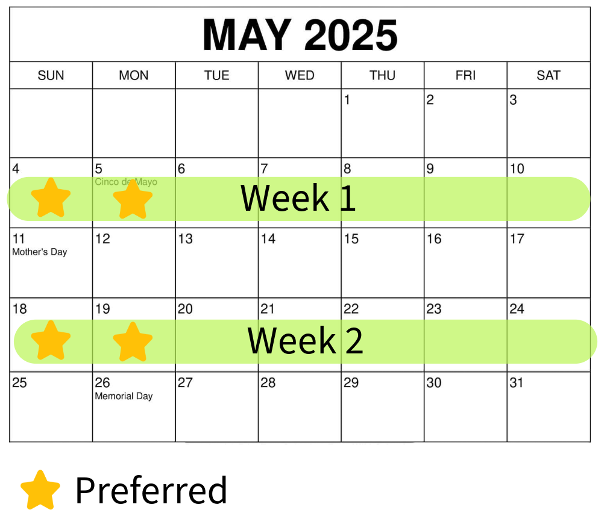
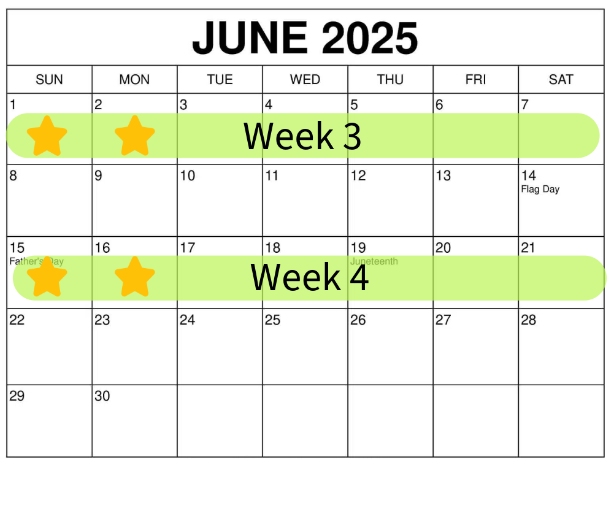
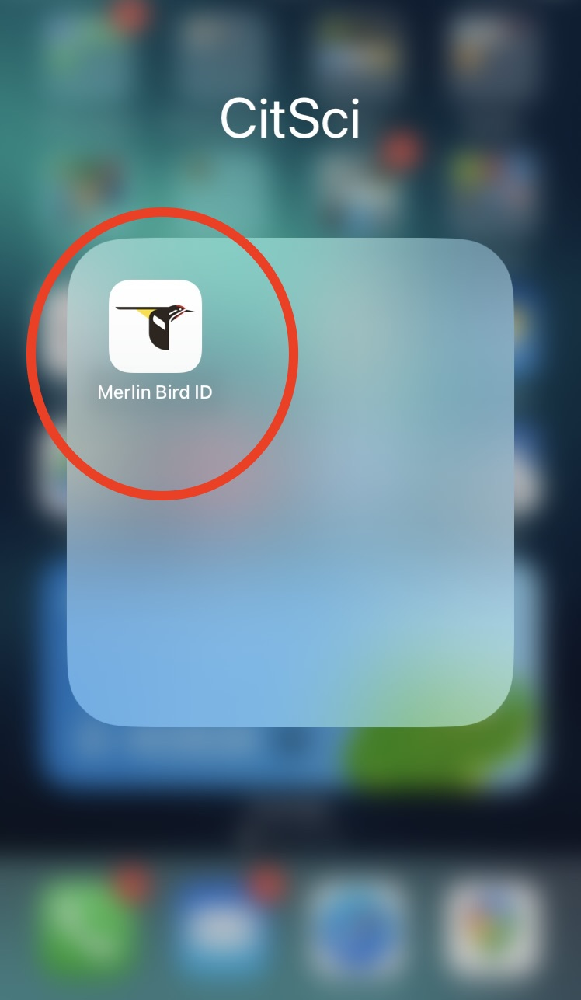

Based on your response to that form, we'll work with you to find a sampling location for you to "adopt" that is convenient for you (e.g. near your home or work).
2. Visit your site
Once you complete the sign-up form, we'll ask you to visit your site 4 times between May and June 2025.
Make sure your site visit is within 3 hours of sunrise so you catch the morning chorus, when most birds are particularly vocal.
It's okay if you're not standing exactly on the marked point; try to be within about 50 yards of it.
Your four site visits should be spread out across the months of May and June according to the calendar below. You can make each recording anytime within the recording week, but we prefer if recordings are made on the days marked with a star (Sunday or Monday).


3. Make your recordings
During each site visit, you'll record 3 minutes of audio on your phone using the free Merlin Bird ID app. You can download it from the Apple App Store
here
or the Android Google Play store
here. Using the app is super easy! Click through the images below to learn how to make a recording. We recommend that you try this out before going to make your first recording, in case you run into any issues.

1. Open the Merlin App
4. Note Conditions
After you email us your recording, we'll send a short followup email asking for a few additional details (your impression of the overall soundscape, the weather, etc.). Be sure to respond to this email promptly!